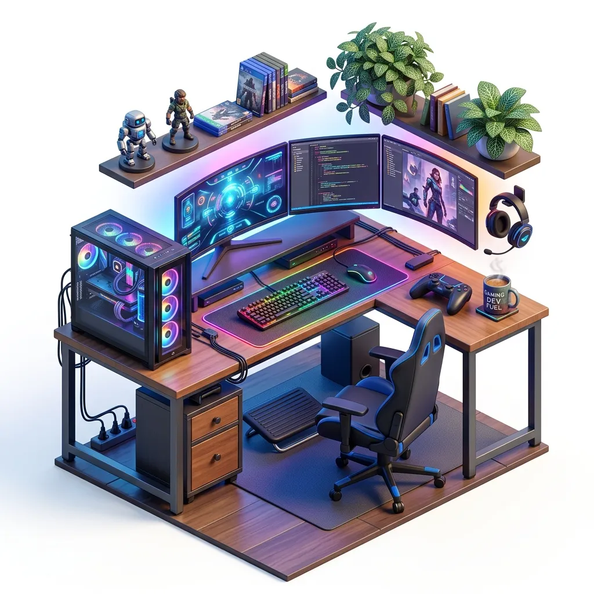

Current Openings
We don't have any new openings as of now. However, we are always excited to meet creative designers, builders, and developers.
Get In Touch
You can send your resume or portfolio to contact@oqulix.com or visit www.oqulix.com We will review your application and keep it on file to consider you when an appropriate opening becomes available.